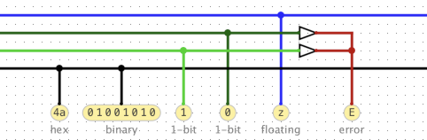

Found in Wiring Library
A probe displays the value of a signal. It is mainly intended for debugging, by showing the value carried by some wire or output from some other component. Probes do not affect the functioning of a circuit in any way.

Each probe has a single input port. The signal at this port is displayed by the probe. As a convenience, a probe automatically adjusts the width of it's port to match whatever it is connected to.
None - probes do not respond to being poked.
Probe components are silently ignored during FPGA synthesis.